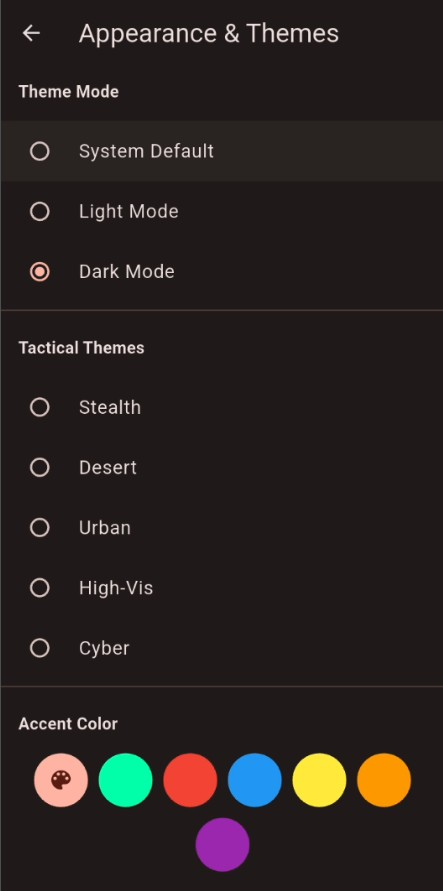

راهنمای پیکربندی ظاهر و تمها 🎨
محیط بصری بیپ رو مطابق با شرایط نوری تمرین، استایل شخصی و سلیقه تاکتیکالت بازطراحی کن.

حالت پوسته اصلی (Theme Mode)
این بخش ساختار و بیس گرافیکی اپلیکیشن رو کالیبره میکنه و شامل سه گزینه کلیدیه:
- System Default: هماهنگی هوشمند و خودکار پوسته برنامه با تم جاری سیستمعامل گوشی.
- Light Mode: رابط کاربری روشن با کنتراست بالا جهت خوانایی کامل زیر نور مستقیم خورشید یا فضاهای باز.
- Dark Mode: پوسته تاریک بهینه برای کاهش خستگی چشم و صرفهجویی در مصرف باتری در کالیبرهای شبانه.
تمهای تاکتیکال (Tactical Themes)
برای فرار از پوستههای دارک معمولی، ۵ کالیبراسیون رنگی اختصاصی برای شرایط مختلف پیادهسازی شده:
حالت مخفیکاری تمام مشکی و بدون انعکاس نور برای حفظ فوکوس مطلق در تاریکی غلیظ شب.
طیف رنگی خاک کالیبره شده با الهام از تجهیزات تاکتیکال مناطق بیابانی و خشک.
گاموت خاکستری متالیک هماهنگ با بتنهای شهری و سالنهای مدرن سرپوشیده.
سیستم رنگی با بازتاب فرکانسی بالا برای به حداکثر رساندن سرعت رفلکس چشمی.
تم سایبرپانک نئونی (ماتریس سبز و مشکی) جهت تزریق بالاترین حد آدرنالین به سیستم عصبی.
رنگ شاخص المانها (Accent Color)
بخش پالت رنگی پایین صفحه بهت اجازه میده «امضای فرکانسی و بومی» اپلیکیشن رو شخصیسازی کنی. با تغییر این بخش، رنگ دکمههای عملیاتی (مثل START)، اسلایدرها، شمارندهها و نقاط کلیدی فوکوس بلافاصله دگرگون میشن:
- رنگ داینامیک (آیکون پالت 🎨): با فعالسازی این گزینه (اولین دایره از سمت چپ)، اپلیکیشن از موتور هوشمند Material You استفاده میکنه تا رنگ شاخص برنامه رو دقیقاً بر اساس والپیپر و تم رنگی جاری سیستمعامل گوشی شما هماهنگ و ست کنه.
- رنگهای ثابت استاتیک: شامل طیف وسیعی از رنگهای نئونی کالیبره شده (سبز، قرمز، آبی، زرد، نارنجی و بنفش). شما میتونی بر اساس روانشناسی رنگها یا نیاز تمرینی، رنگی رو انتخاب کنی که بیشترین تحریک چشمی و رفلکس ذهنی رو برات ایجاد میکنه.